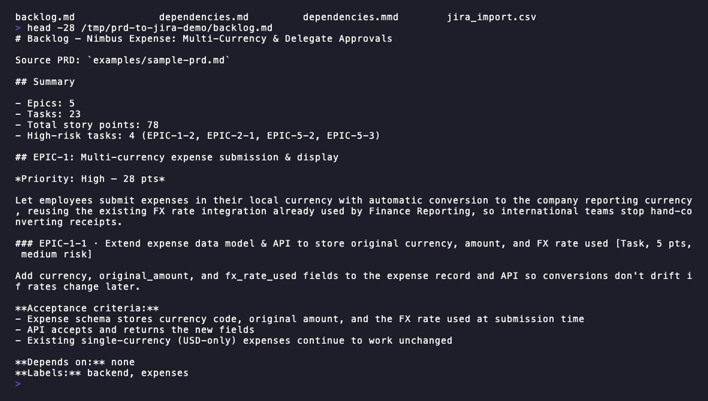

Staff Technical Program Manager · AI-native engineering · San Francisco Bay Area
I turn ambiguous goals into execution systems teams can scale — and, increasingly, into AI systems that run them.
About 15 years leading large technical programs across developer productivity, build and release infrastructure, and incident management at Snowflake and Flow. Today I build open-source Claude Code skills that automate the mechanical parts of program management, so the judgment calls stay with people.
Release cycle cut from weekly to daily (Snowflake Ship Faster)
10×
Developer inner-loop productivity gain (Snowflake Type Faster)
7 + 1
Open-source AI TPM skills, plus a harness that tests them
~15 yrs
Leading programs across dev productivity, infra and release
Centerpiece
An AI-native TPM pipeline, end to end
Four connected skills take one PRD all the way to an executive dashboard. Each one passes structured JSON to the next. In every skill, Claude makes the judgment calls and plain, tested Python does the math, so every number is reproducible.
Swipe the diagram →
What the pipeline caught in the worked example
One synthetic PRD ("Nimbus Expense") becomes 5 epics, 23 tasks and 78 story points, with a planned finish of 2026-08-20. The status report rates the program RED because the critical path slipped one day, to 08-21. The Monte Carlo forecast reaches the same 08-21 P50 by a completely different method. It also finds that the team that caused the slip is now on track, and the real tail risk sits with Backend. That second finding is the kind of insight nobody gets when four reports live in four documents.
Selected work
The pipeline, skill by skill
All projects are open source under the MIT license. Every example uses synthetic data and no employer information.

01 · Plan
prd-to-jira
Turns a PRD into a Jira-ready backlog with epics, tasks, cross-team dependencies and Fibonacci estimates. It replaces a couple of hours of manual breakdown per PRD.
Claude scores tasks against a written rubric. Anything that would score 13 is flagged as a spike, not estimated.
Outputs a Jira import CSV, a risk-colored dependency graph and a review doc.
Turns a backlog into a real schedule using the critical-path method: early and late starts over business days, slack per task, a Mermaid Gantt chart, and a risk register of every dependency that crosses a team boundary.
Validates the graph first and fails loudly on cycles or missing dependencies.
Makes team handoff risk part of the schedule instead of a separate spreadsheet.
16 cross-team handoffs 2 of them on the critical path
Combines the schedule with raw team notes to produce an executive status report. The RAG rating follows an explicit rubric, so real slips aren't softened to amber and harmless delays don't turn the project red.
The overall rating comes from the worst epic on or near the critical path.
Checks the plan's assumed team velocity against what each team has actually delivered. It runs 10,000 Monte Carlo trials per team, resampling real sprint throughput, and returns P50, P85 and P95 finish dates.
Only teams with work on the critical path can change the overall verdict.
Combines all four outputs into one dashboard. It never recalculates upstream numbers. It validates and merges them, and Claude's only job is the executive summary that connects them, because the most useful findings come from comparing reports.
One page backlog, schedule, RAG and forecast together
A test harness that checks all seven skills against their own guarantees, such as slack formulas, percentile order and date order. It then deliberately corrupts known-good output to prove each check actually fails when it should. A check that never fails is reported as a harness gap.
Reads a codebase and writes the briefing a senior engineer would give a new hire: an architecture map, a ranked list of files to read first, gotchas with evidence, and scoped first tasks. Tested on three real open-source repos.
Turns a Slack thread, logs and alerts into a postmortem with a timeline, root cause, severity and owned action items. Every duration is recalculated from raw timestamps instead of trusted from the model.
43 min outage not "about 40", the number people tend to remember
Answers "where did my Claude Code tokens actually go?" It spreads each request's cost across everything in context, so per-item costs add up exactly to the session total. Runs locally with no network calls.
Bulk-archives ChatGPT history by date or keyword from your own logged-in tab. Dry run by default, rate-limited, and re-checks every archive because the API can return 200 OK without saving the change.
"200 OK" ≠ done the lesson that led to skill-verifier
I use Claude Code daily for planning, analysis, writing and building. I treat it like any other production system: with guardrails, verification and a cost ledger. Here are four weeks of my own usage, measured with token-ledger.
954API requests over 4 weeks (Oct 8 – Nov 3, 2026)
$81.81total at API list prices
97%cache hit rate, yet cache writes were still 36% of cost
199 : 1tokens read for every token written
AI drafts. Humans decide.
Models handle the tedious parts: decomposition, extraction and first drafts. Decisions that carry accountability, such as priority, risk and go/no-go, stay with people, and the output says which is which.
Judgment from the model, math from code.
Every skill splits the work. Claude classifies and explains, and deterministic, testable code calculates dates, slack, percentiles and durations. A number I can't reproduce doesn't belong in an exec report.
Structured, reviewable, traceable.
Outputs are JSON with schemas, validated before rendering, with evidence attached to each claim. Automation should reduce toil without hiding important decisions.
Experience
Where I've led programs
Flow
Staff Technical Program Manager · Sep 2025 – May 2026
Built an AI-native program dashboard (LLM + Confluence/Jira) that auto-generates status, risks and confidence scores, cutting manual reporting by 70%.
Developed an AI PRD-to-Jira pipeline that turns requirements into estimated tickets, reducing sprint planning time by 50%.
Launched an AI-driven CI insights platform (GitHub integration) that detects failures and flaky tests, improving MTTR by 25% and reducing failures by 30%.
Implemented an AI-augmented release readiness system monitoring CI health and risk, reducing release delays by 40%.
Scaled AI skills (agents) for ticketing, RCA and release notes, saving 10+ hours/week per team. Enabled multi-agent shared context across teams, reducing misalignment by 35%.
Snowflake
Senior Technical Program Manager · Sep 2022 – Mar 2025
Ship Faster: cut the release cycle from 7 days to 1 day across release validation, release infrastructure, regression detection and parameter management, run through weekly DRI reviews, a ship room and biweekly leadership reviews.
Type Faster: a 10× improvement in developer inner-loop productivity across CI latency, merge delays, testing, IDE and containerization.
Bazel migration: moved builds from Maven/CMake to Bazel with remote execution (BuildBarn, BuildBuddy, Kubernetes). A champion model, training and adoption metrics raised Bazel adoption by 40% in 3 months, and Dev Environment adoption by 30% in 4 months.
Technical Program Manager, Product Release · Mar 2021 – Aug 2022
Established the release plan and release windows across a portfolio of products.
Ran cross-functional programs, managing dependencies across teams and communicating plans, commitments, risks and mitigations to executives.
Led agile workshops for development teams, functional teams and key stakeholders.
Gigster
Founding Technical Program Manager · Sep 2018 – Feb 2021
Built a new Product Support offering from the ground up, winning 15 new engagements and close to $1M in revenue in 9 months.
Automated deployments by implementing CI/CD across a portfolio of customers, and introduced agile processes that cut production deployment time in half.
Owned the customer lifecycle from launch to production support, working with engineering, product, security and enterprise customers.
Built and mentored a team of 10 engineers (DBAs, sysadmins, deployment engineers) running production infrastructure for a SaaS business with $5M+ revenue and 1,000+ users.
Built tools and processes that cut production deployment time by 90%, and designed SQL clusters that halved SQL licensing costs.
Led on-site client deployments in Macau, Beijing and Shanghai. Moved the company's issue tracking from Bugzilla to Jira.
Education & certifications
B.S. Computer Engineering, Mumbai University
Certified ScrumMaster (CSM)
Certified SAFe 5 Product Owner / Product Manager
Microsoft Certified: Azure Fundamentals (AZ-900)
Snowflake Hands-On Essentials: Data Warehouse
Toolkit
Program governance
Executive communication
Release management
CI/CD & build systems (Bazel)
Incident management
Change management
Metrics-driven execution
Claude Code & Claude API
Agent orchestration
Evals & verification
RAG & grounding
Python
SQL
Let's talk.
I'm looking for Staff TPM roles where AI changes how engineering gets delivered, and where better execution systems are the leverage.